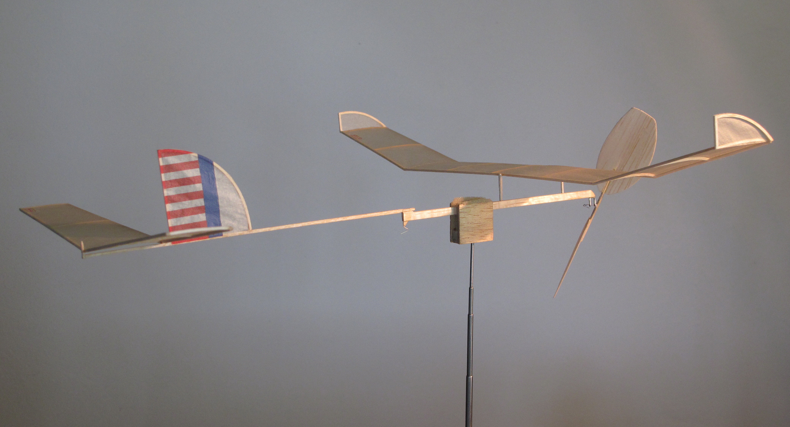
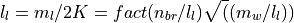

Hodson’s Flight Data

Gary Hodson kept records for many of his flights with versions of the Wart A-6 model. He provided that data as part of my study in the form of an Excel spreadsheet. The columns in this spreadsheet are as follows:
Note
Units are in parentheses)
A: Flying site and Year
B:
 - Ceiling height (feet)
- Ceiling height (feet)C: - Propeller pitch (degree)
D: - Motor weight in gram)
E: - Motor width (inch/1000)
F: - Motor thickness (inch/1000)
G: - Motor cross section area = E*F (inch**2)
H: - Motor length (inch)
I: :math’n - Winding Turns (turn)
J: Turn density = I/H (turn/inch)
K: - Torque (inch * ounce)
L: :math:1t_m` - time (minute)
M: - Time (second)
N:
 - Flight time = L*60 + M (second)
- Flight time = L*60 + M (second)O: Average propeller speed = I/N (turn/second)
P: :math: m_v` - Motor volume = G * H (inch ** 3)
Q: = P / D (inch**3/gram)
R: = P/I (inch**3/turn)
S: = R / I (inch**3/turn**2)
T: He = B/(483 * U)
U: Wm/W = D/(1.2 + D)
V: = 6.61 * D
W: Nbreak = 45.257 * H/sqrt(D/H) (turn)
X: %Nb = I / W
Y: t/Rd = N/J
Z: Navg/pitch = N/J
AA: Navg/Q = O/K
It appears that Gary is using Mark Drela’s paper to calculate the energy available for a given motor, and a variation of Don Slusarczyk’s scheme to calculate the motor breaking winds.
Based on the formulas in this spreadsheet, the recorder motor length is actually twice the loop length.
Breaking turns
Don Slusarczyk published an article on calculating the breaking turns of a rubber motor. His formulas were as follows:
Given:
n_br = break turns
m_l = loop length * 2
m_w motor weight
The K factor is given as

Example Data
Using Gary’s record setting flight data, let’s check things out using python and the Python units package pint:
- = 147 * feet
= 48 * degree
= 3.1 * gram
= 36/1000 * inch
= 38/1000 * inch
= 18 * inch
 = 3660 * turn
= 3660 * turn= 3.1 * inch * ounce
= 10 * minute
= 18 * second
Here is the code that processes this data:
1import math
2
3class Wart(object):
4
5 def __init__(self, ureg):
6 self.ureg = ureg
7
8 def load(self):
9 u = self.ureg
10
11 # recorded flight data
12 self.H = 147 * u.feet
13 self.Phi = 47 * u.degree
14 self.w_m = 0.86 * u.gram
15 self.w_a = 1.2 * u.gram
16 self.m_w = 36/1000.0 * u.inch
17 self.m_t = 38/1000.0 * u.inch
18 self.m_l = 18 * u.inch
19 self.a_w = 1.2 * u.gram
20 self.n = 3660 * u.turn
21 self.t_m = 10 * u.minutes
22 self.t_s = 18 * u.second
23
24
25
26 def get_properties(self):
27
28 # generate calculated properties
29
30 # motor data
31 self.m_x = self.m_w * self.m_t
32 self.m_v = self.m_x * self.m_l
33 self.m_rho = self.w_m / self.m_v
34 self.n_rho = self.m_v / self.n
35
36 self.n_brk = 45.259*u.inch/u.gram * self.m_l/math.sqrt(self.w_m/self.m_l)
37 # flight data
38 self.t = self.t_m + self.t_s
39 self.n_avg = (self.n / self.t)
40 self.w = self.w_m + self.w_a
41 self.H_e = self.H/(483*(self.w_m/self.w))
42
43 result = {
44 'H': self.H,
45 'Phi': self.Phi,
46 'w_m': self.w_m,
47 'm_w': self.m_w,
48 'm_t': self.m_t,
49 'm_l': self.m_l,
50 'm_x': self.m_x,
51 'm_v': self.m_v,
52 'm_rho': self.m_rho,
53 't': self.t.to(u.second),
54 'n_rho': self.n_rho,
55 'n_avg': self.n_avg,
56 'H_e': self.H_e,
57 'n_brk': self.n_brk,
58 }
59 return result
60
61if __name__ == '__main__':
62 import pint
63 u = pint.UnitRegistry()
64 w = Wart(u)
65 w.load()
66 p = w.get_properties()
67 for key in p:
68 print(f'{key} = {p[key]}')
69
70 print(f"Motor Volume = {p['m_v']:.6e}")
And, here is the result:
H = 147 foot
Phi = 47 degree
w_m = 0.86 gram
m_w = 0.036 inch
m_t = 0.038 inch
m_l = 18 inch
m_x = 0.0013679999999999999 inch ** 2
m_v = 0.024623999999999997 inch ** 3
m_rho = 34.92527615334633 gram / inch ** 3
t = 618.0 second
n_rho = 6.727868852459015e-06 inch ** 3 / turn
n_avg = 355.3398058252427 turn / minute
H_e = 0.7290192113245703 dimensionless
Motor Volume = 2.462400e-02 inch ** 3